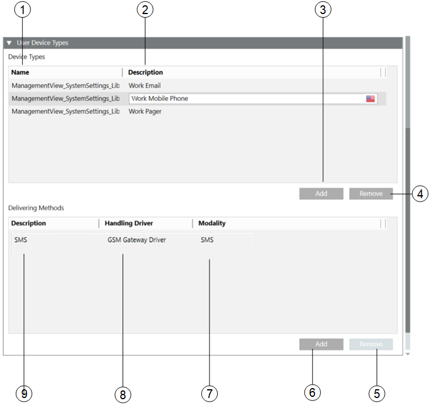

User Device Types
(This expander is available for Reno Plus license users)
The User Device Types expander lists the available recipient user devices and their associated delivery methods:

| Name | Description |
1 | Name | Displays the name of the user device types. |
2 | Description | Displays the description of the user device type. |
3 | Add | Add new user device types. |
4 | Remove | Remove the selected user device type. |
5 | Remove | Remove the selected delivery method. |
6 | Add | Add a new delivery method to a user device type. |
7 | Modality | Supported Modality gets selected by the handling driver for the corresponding delivery method. |
8 | Handling Driver | Handling driver gets selected for the corresponding delivery method. |
9 | Description | Displays the description of the delivery method for a selected user device type. |